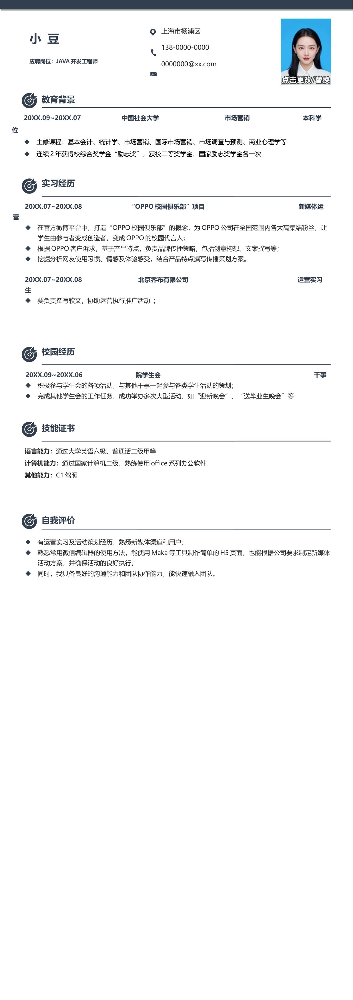

小 豆
应聘岗位：JAVA 开发工程师
20XX.07~20XX.08 “OPPO 校园俱乐部”项目 新媒体运
营
•
在官方微博平台中，打造“OPPO 校园俱乐部”的概念，为OPPO 公司在全国范围内各大高集结粉丝，让
学生由参与者变成创造者，变成OPPO 的校园代言人；
•
根据OPPO 客户诉求，基于产品特点，负责品牌传播策略，包括创意构想、文案撰写等；
•
挖掘分析网友使用习惯、情感及体验感受，结合产品特点撰写传播策划方案。
20XX.07~20XX.08 北京乔布有限公司 运营实习
生
•
要负责撰写软文，协助运营执行推广活动 ；
20XX.09~20XX.06 院学生会 干事
•
积极参与学生会的各项活动，与其他干事一起参与各类学生活动的策划；
•
完成其他学生会的工作任务，成功举办多次大型活动，如“迎新晚会”、“送毕业生晚会”等
20XX.09~20XX.07 中国社会大学 市场营销 本科学
位
•
主修课程：基本会计、统计学、市场营销、国际市场营销、市场调查与预测、商业心理学等
•
连续2 年获得校综合奖学金“励志奖”，获校二等奖学金、国家励志奖学金各一次
语言能力：
通过大学英语六级
、
普通话二级甲等
计算机能力：
通过国家计算机二级，熟练使用office 系列办公软件
其他能力：
C1 驾照
上海市杨浦区
138-0000-0000
0000000@xx.com
教育背景
实习经历
校园经历
技能证书
•
有运营实习及活动策划经历，熟悉新媒体渠道和用户；
•
熟悉常用微信编辑器的使用方法，能使用Maka 等工具制作简单的H5 页面，也能根据公司要求制定新媒体
活动方案，并确保活动的良好执行；
•
同时，我具备良好的沟通能力和团队协作能力，能快速融入团队。
自我评价